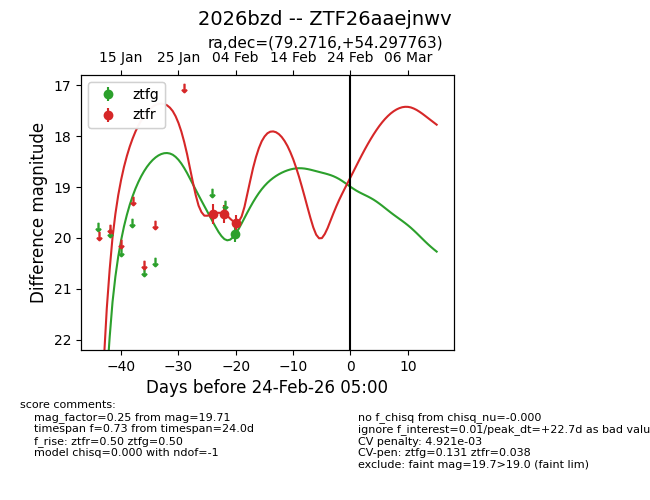
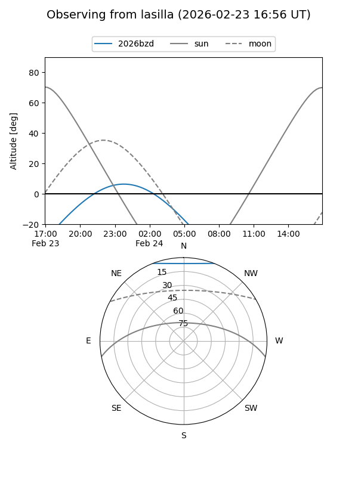
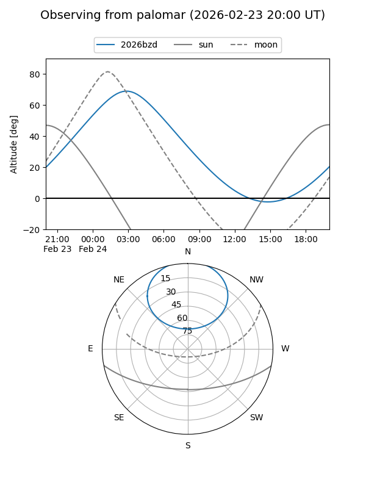

2026bzd
Target 2026bzd at 2026-02-24 09:08
Aliases and brokers:
FINK: link
Lasair: link
ALeRCE: link
TNS: link
YSE: link
alt names
ZTF26aaejnwv (ztf,fink_ztf)
2026bzd (tns,yse)
Coordinates:
equatorial (ra, dec) = 79.2716,+54.29776
equatorial (HMS+DMS) = 05:17:05.19,+54:17:51.95
galactic (l, b) = (155.7528,+9.34955)
Flags:
likely cv
Photometry:
last ztfg=19.93, ztfr=19.71
1 ztfg, 3 ztfr detections
Lightcurve

Visibility


Additional plots